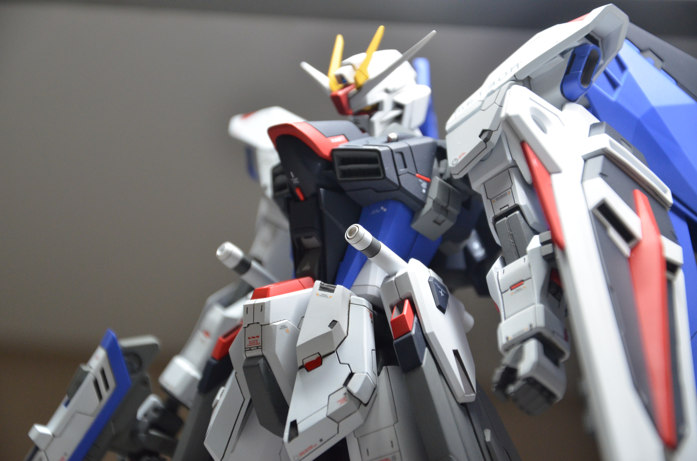
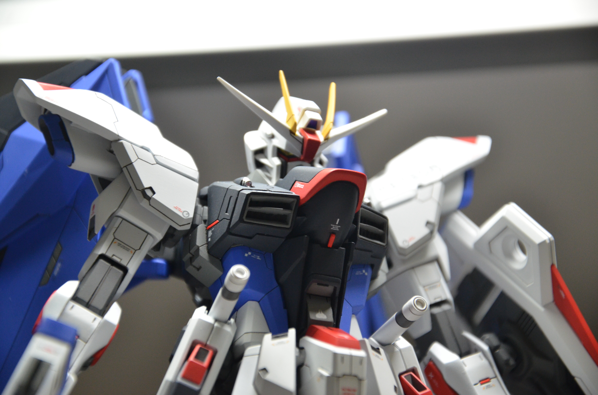
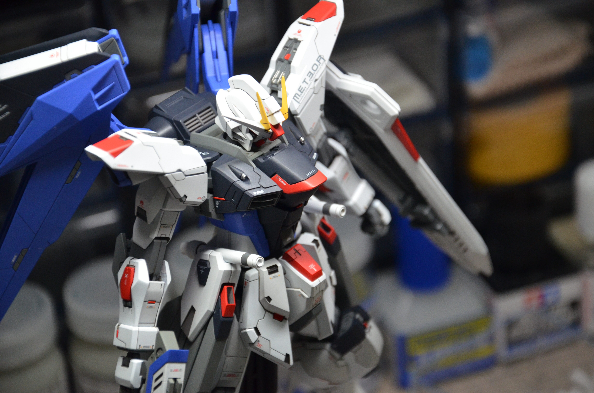
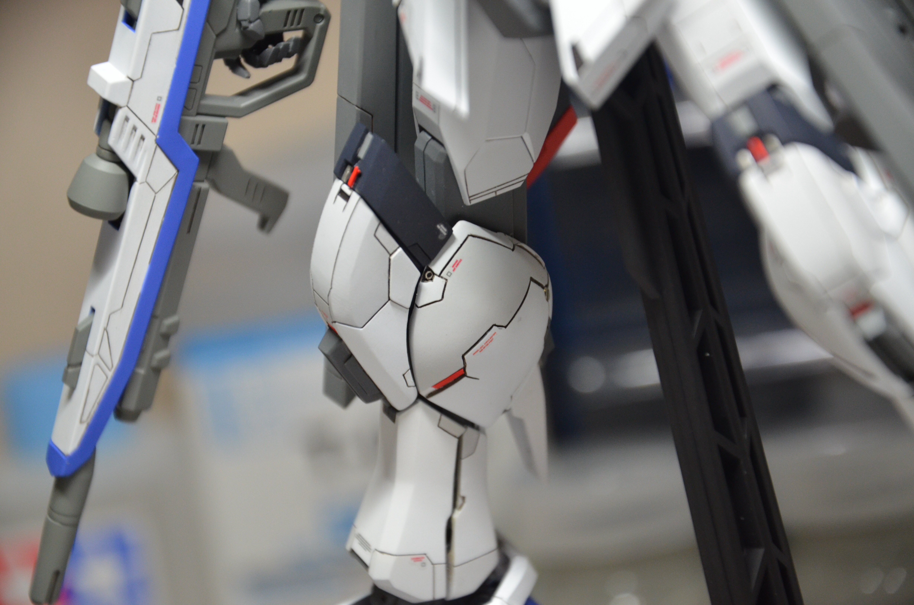
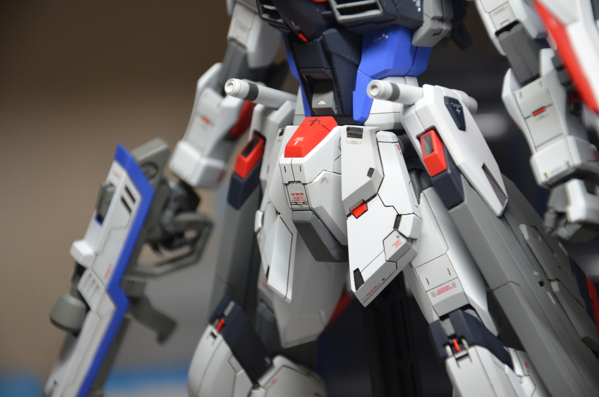
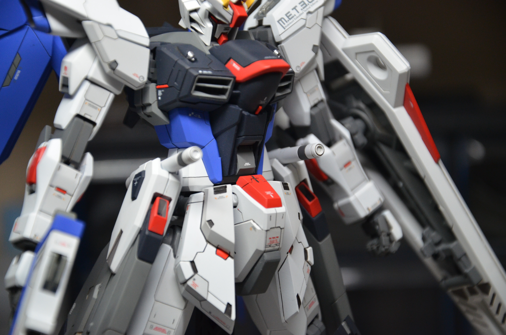
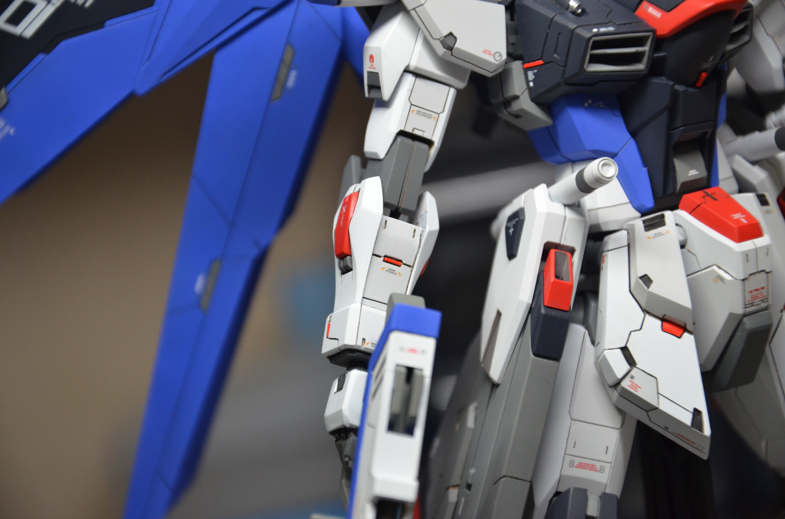
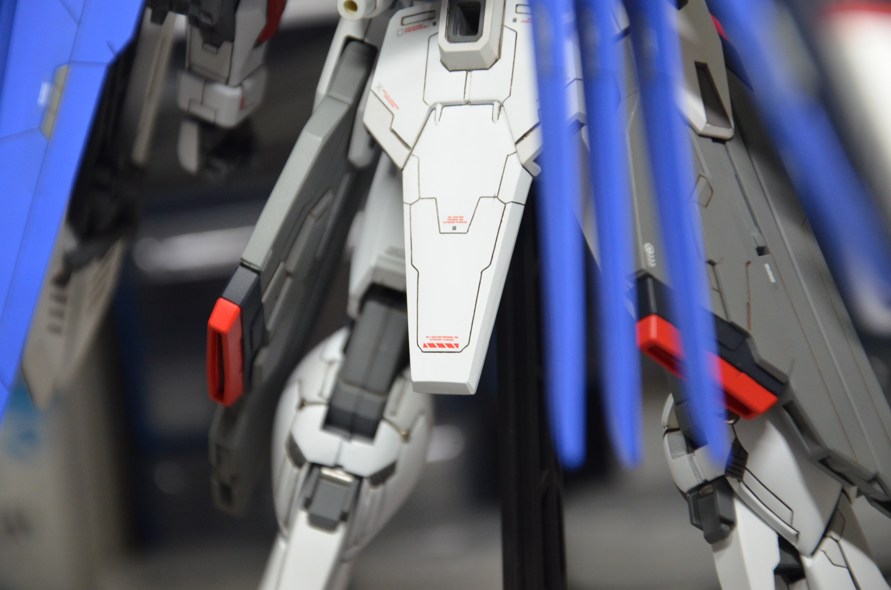
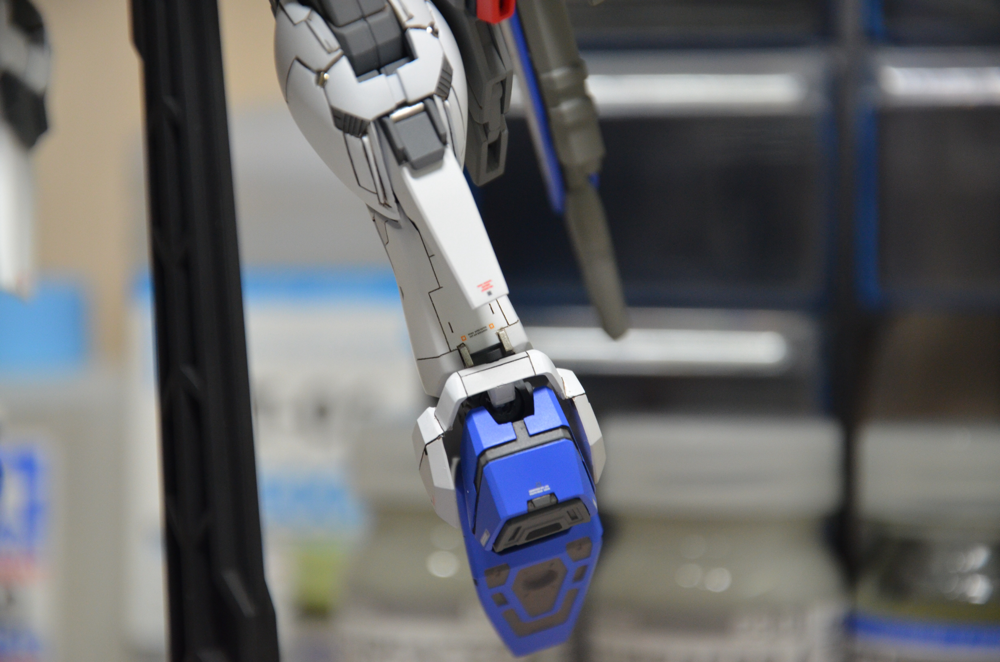
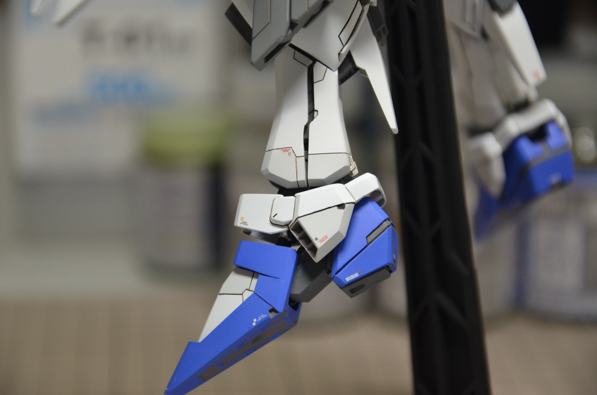

Hundreds of Gundam models, primarily made of plastic but sometimes with resin and metal detail parts, have been released. They range in quality from children's toy kits to hobbyist and museum-grade models, and most are in 1:35, 1:48, 1:60, 1:100 or 1:144 scale. Promotional 1:6 or 1:12 scale models are supplied to retailers and are not commercially available. For Gundam's 30th anniversary, a full-size RX-78-2 Gundam model was constructed and displayed at Gundam Front Tokyo, in the Odaiba district;[28] it was taken down on 5 March 2017.[29] A new statue of the Unicorn Gundam was erected at the same location, now renamed The Gundam Base Tokyo.
CODES: 1-35-012
KIT DATE & SPECIFICATIONS
RETAIL
  
 
  
 